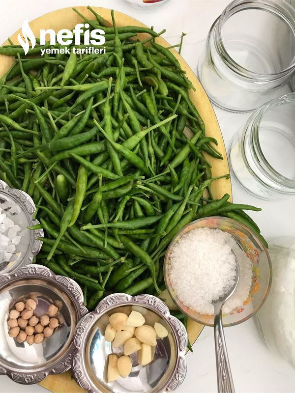

🍽️ 8-10 kişilik⏱️ Hazırlık: 30 dk🏷️ Diğer Tarifler🏷️ Turşu Tarifleri
Malzemeler
- Yarım kg küçük acı süs biberi
- Yarım lt sirke
- Limon tuzu
- 10 tane nohut
- 20-25 diş sarımsak
- Tuz
- Su
Hazırlanışı
- Biberlerimizi yıkıyoruz.
- Kavanozun atına 2 şer nohut atıyoruz.
- Biberleri dolduruyoruz.
- Aralarına 4-5 diş sarımsak koyuyoruz.
- Biberler bitince her kavanozun yarısına kadar sirke koyuyoruz.
- Her kavanoza 1 kaşık tuz, 1 tatlı kaşığı silme limon tuzu ilave ediyoruz.
- Üzerini su ile dolduruyoruz.
- Kapağını sıkıca kapatıp serin bir yerde bekletiyoruz.
- 15-20 gün sonunda yemeklerin yanında afiyetle tüketiyoruz.Afiyet olsun 😊.